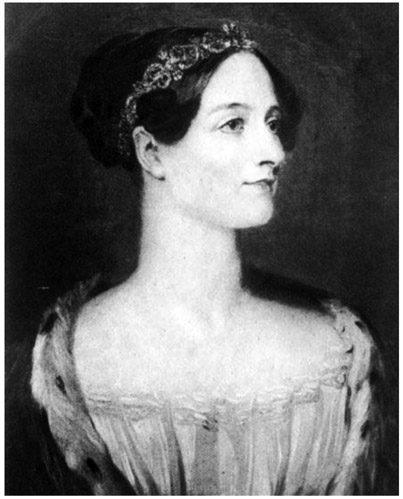
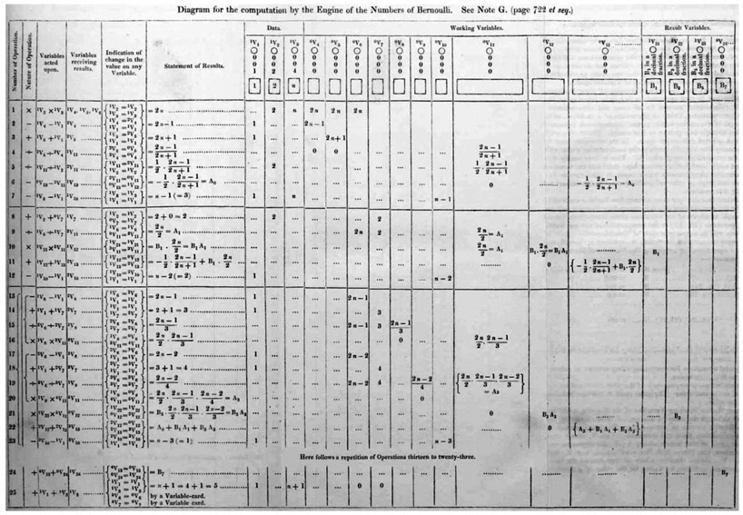
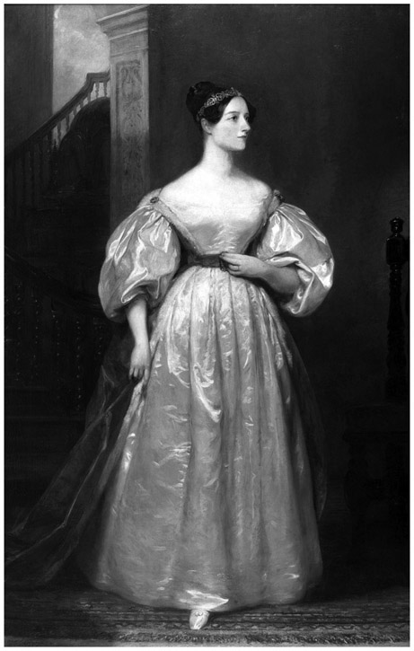

Ada Lovelace: English (1815–1852)
In this technological age, when the computer pretty much guides us through our daily lives, the profession of computer programmer has become popular as a result. A curious person might ask: Who was the first computer programmer? Consensus has it that English mathematician Augusta Ada King Noel, Countess of Lovelace—more commonly known as Ada Lovelace—holds that honor.
It all began when Lovelace was seventeen and scientist Mary Somerville introduced her to the mathematician Charles Babbage. Babbage showed her his just-developed invention, the Difference Machine, which is considered the world’s first mechanical calculator (see chap. 30). Babbage also conceived of the Analytical Engine, which had been intended to do much more than mere subtractions; unfortunately, it was never actually built. Babbage, who was twenty-four years her senior, was enchanted with Lovelace’s interest in mathematics and science. They began a twenty-year correspondence. Lovelace remained enthusiastic for mathematics throughout her life. For example, at age twenty-five, she contacted the well-known British mathematician and first professor of mathematics at the University of London, Augustus De Morgan, and asked him to tutor her in mathematics. At one point, De Morgan wrote to Lovelace’s mother, indicating that Ada Lovelace had an extraordinary talent in mathematics, which would have made her quite famous, if she were a man.

Figure 34.1. Ada Lovelace, portrait ca. 1840.
In 1843, Lovelace produced what we consider today the first foray into computer programming. The story begins in 1841, when Babbage was invited to give a lecture at the University of Turin to describe his Analytical Engine. Luigi Menabrea, a mathematician who would eventually become prime minister of Italy, took notes on the lecture and transcribed them in French. In 1843, Babbage’s friend Charles Wheatstone asked Lovelace to translate the French notes into English as she was fluent in French. She not only translated the work but also added her own notes about the lecture. One such addition was her description of an algorithm for the Analytical Engine that could compute the Bernoulli numbers (a sequence of rational numbers that occur frequently in number theory—see chap. 22). In so doing, she became the first person to write an algorithm for a machine to produce more than just a simple calculation. Lovelace earned the honor of first computer programmer in the history of mathematics with her achievement. In figure 34.2, we show a diagram contained in Lovelace’s notes—which, by the way, were far more voluminous than the mere translation requested of her.

Figure 34.2. Lovelace’s diagram of her algorithm for the Analytical Engine to compute the Bernoulli numbers, which she included with her translation. (From Sketch of the Analytical Engine Invented by Charles Babbage by Luigi Menabrea, with notes by Ada Lovelace [London: Richard and John E. Taylor, 1843].)
Now that we are familiar with her mathematical achievements, let’s examine the life of Augusta Ada King Noel, Countess of Lovelace. She was born on December 10, 1815, in London, England, to her parents, Lady Byron (Anne Isabella Noel Byron, 11th Baroness Wentworth and Baroness Byron, nicknamed Annabella) and the famous British poet Lord Byron (George Gordon Byron, 6th Baron Byron). Unfortunately, a month after Ada’s birth, Lord Byron separated from his wife; several months later, he left England forever. In the third canto of Childe Harold’s Pilgrimage: Harold the Wanderer, Lord Byron mentioned his daughter: “Is thy face like thy mother’s my Fair child! ADA! sole daughter of my house and heart?”1 Byron died in 1824 in Missolonghi, Greece.
Lovelace had an unusual early life. Her mother was truly angry at the departure of her husband, so Ada grew up never having seen even a picture of her father. That did not happen until she was twenty years old. Lovelace was largely reared by her maternal grandmother, Judith Milbanke, and she suffered a number of childhood illnesses. For example, in 1829, she spent nearly a year in bed, suffering from a paralysis that evolved from a bout with the measles. Lovelace was interested in not only mathematics but also all things mechanical and scientific. For example, she was fascinated by the notion of flying, which prompted her to write a book titled Flyology, even though she was still just an adolescent. Her work in Flyology illustrated her understanding of what would be required for humans to fly like birds, considering, for instance, the size of wings that humans might need to use in order to fly. Motivated by her interest in science, Lovelace sought out many of the top scientists in England. Notable among these was Michael Faraday, who made major advances in electromagnetism.
In 1834, Lovelace began to attend regular court events, where she charmed people with her intelligence and her dancing talent. On July 8, 1835, she married William, 8th Baron King; as Lady King, Lovelace entered into a rather wealthy environment. Over the next four years, she gave birth to three children, Byron, Anne Isabela, and Ralph Gordon. Since she was a descendent of Baron Lovelace, in 1838, her husband became the Earl of Lovelace, and she became the Countess of Lovelace. Her mother continued to stay involved with the family; she hired tutors to support the three children and ensured that her daughter remained morally correct.
Perhaps it was Ada Lovelace’s interest in mathematics, which spurred her later love of gambling. In the late 1840s, betting on horses resulted in her loss of over £3,000. In 1851, she tried to develop a mathematical model to guide her to successful bets, but this was a total financial disaster. Despite these struggles, Lovelace is lauded to this day for her insight into the potential of Babbage’s Analytical Engine to bring further developments in mathematics beyond merely doing arithmetic calculations. In her notes to the translation of Babbage’s lecture, she included the following:

Figure 34.3. Portrait of Ada Lovelace. (Painting by Margaret Sarah Carpenter, oil on canvas, 1836).
Again, it [the Analytical Engine] might act upon other things besides number, were objects found whose mutual fundamental relations could be expressed by those of the abstract science of operations, and which should be also susceptible of adaptations to the action of the operating notation and mechanism of the engine. . . . Supposing, for instance, that the fundamental relations of pitched sounds in the science of harmony and of musical composition were susceptible of such expression and adaptations, the engine might compose elaborate and scientific pieces of music of any degree of complexity or extent.
The distinctive characteristic of the Analytical Engine, and that which has rendered it possible to endow mechanism with such extensive faculties as bid fair to make this engine the executive right-hand of abstract algebra, is the introduction into it of the principle which Jacquard devised for regulating, by means of punched cards, the most complicated patterns in the fabrication of brocaded stuffs. It is in this that the distinction between the two engines lies. Nothing of the sort exists in the Difference Engine. We may say most aptly that the Analytical Engine weaves algebraic patterns just as the Jacquard-loom weaves flowers and leaves.2
These lines from her notes ofter a good indication of how her vision reached far into the future.
On November 27, 1852, at the age of thirty-six, Lady Ada Lovelace died from uterine cancer. During her fatal illness, she was comforted and cared for by her mother, Annabella. One of the many famous people whom Lovelace met during her life was the famous author Charles Dickens. In August 1852, Dickens visited his bedridden friend and, at her request, read her a well-known scene from his 1848 novel, Dombey and Son, in which a six-year-old boy dies. As she wished, Lady Ada Lovelace was buried next to her father, Lord Byron, inside the church of St. Mary Magdalene in Hucknall, England.
Through the twentieth century, Lovelace has been remembered through books (The Difference Engine, by William Gibson and Bruce Sterling), plays (Childe Byron, by Romulus Linney), and films (Conceiving Ada, directed by Lynn Hershman Leeson). However, it should be noted that Lovelace’s fame was brought into the fore in 1953, when her notes were republished in the book Faster Than Thought: A Symposium on Digital Computing Machines, by B. V. Bowden. Today, in the United Kingdom, the second Tuesday of October is designated as Lady Ada Lovelace Day. As recently as 1980, the United States Department of Defense honored Lady Lovelace by naming a newly developed computer language with her first name, “Ada.” Her legacy lives on as the first computer programmer, not necessarily the first woman computer programmer, but in actual fact, the first person to be a computer program. Moreover, she really was a visionary in that she realized the significance of Babbage’s Analytical Machine, foreseeing the versatile applicability of programmable computers.